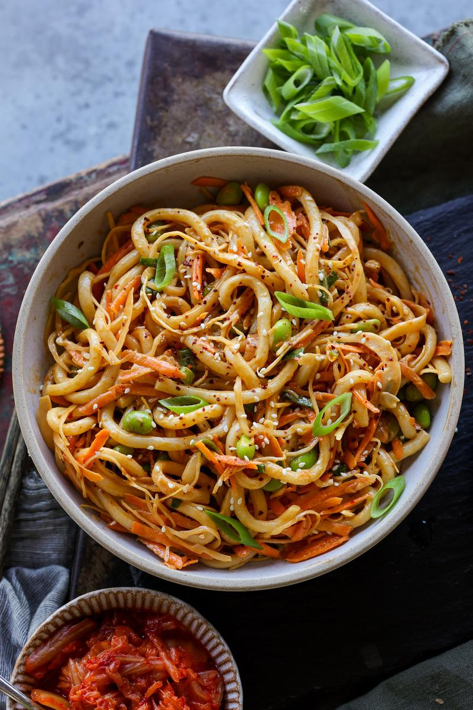

CREAMY KIMCHI UDON NOODLES

Description
Chewy udon noodles, fiery kimchi, and a velvety sauce, all snugly tucked into a portable jar. And the best part? - to enjoy this flavour explosion, you just need to give the jar a good shake!
Ingredients
- 200 g pre-cooked udon noodles
- 55 g grated carrot
- 32 g shredded green cabbage
- 19 g kimchi, roughly chopped
- ½ stalk green onion, thinly sliced
- 78 g cooked shelled edamame
- 1½ Tbsp mayonnaise
- ½ Tbsp dark soy sauce
- ½ tsp toasted sesame oil
Steps
- Add the noodles to a saucepan of boiling water. Cook for 2 minutes, then drain and rinse under cold water. Set aside.
- Meanwhile, prep the carrot, cabbage, kimchi, and green onion.
- Add the mayo, soy sauce and sesame oil to the bottom of your container or jar. Give it a mix.
- Then add the cooled noodles, prepared veggies, and the edamame.
- When ready to enjoy, give it a shake so everything combines or toss it together in a bowl. Enjoy!